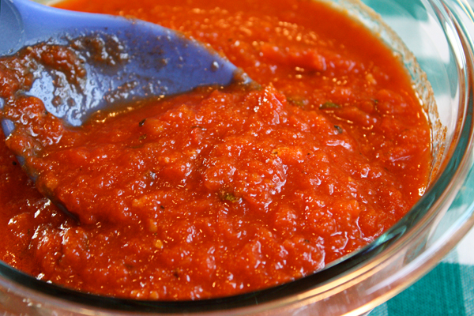

Home
Marinara Sauce

Description
Simple, tangy, savory tomato sauce.
Ingredients
- Olive oil
- Onion
- Garlic
- Canned diced tomatos
- Canned crushed tomatos
- Salt
- Fresh basil
Steps
- Sautee diced onions
- Add minced garlic and sautee until fragrant
- Add both cans of tomatos and simmer to desired consistency
- Add sprig of fresh basil near end of cooking
- Salt to taste